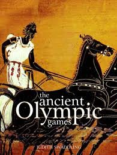
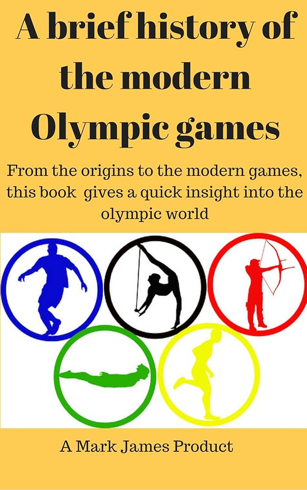

The Ancient Olympics
The Olympic Games were first held in Olympia, Greece in 776 BC. They were part of a religious festival to honor Zeus, the king of the Greek gods. Only free Greek men could compete, and events included running, wrestling, and chariot racing.
The Modern Olympics
The modern Olympic Games were revived in 1896 by Pierre de Coubertin and held in Athens, Greece. Since then, they have grown into the world’s largest sporting event, held every four years and involving athletes from around the globe.
Interesting Facts
- The Olympic flame symbolizes peace and friendship.
- The five rings represent the five continents of the world united by Olympism.
- There are both Summer and Winter Olympics.